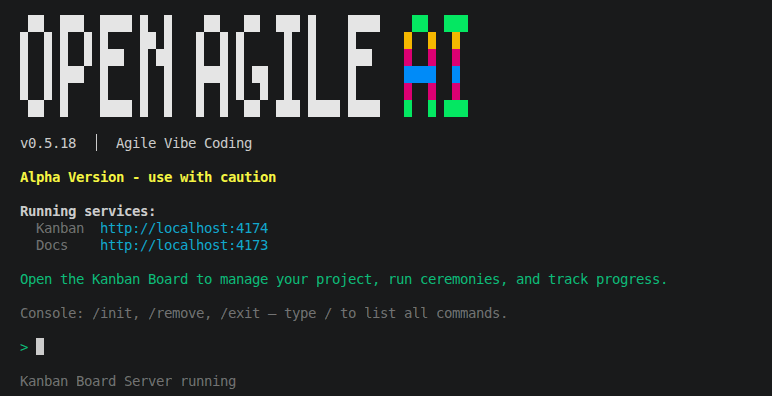
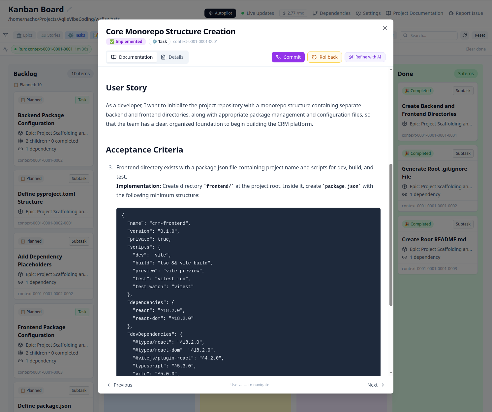

A structured engineering process that decomposes projects into scoped specs, validates before generation, and traces every line of code back to a business requirement.
AI closes the gap between idea and code. It doesn't close the gap between code and understanding. Without traceable intent, versioned context, and enforced structure, you're not building a system — you're accumulating code.
A prompt describes what you want. A spec defines what to build, which files to touch, which interfaces to respect, and what "done" means. Agents need specs.
You give the agent "build auth system." It figures out the breakdown on the fly. Different agents decompose differently. Architecture becomes ad-hoc.
Code gets generated. But which requirement does it satisfy? Which acceptance criteria? When something breaks, there's no trail back to intent.
Errors are caught after code is written — in tests, in review, in production. A bad plan costs more than a bad line of code.
Without audit trails and clear accountability, AI-generated code can't pass compliance reviews. Entire organizations can't adopt AI coding because the governance layer doesn't exist.
$ Does your agent know which files it should NOT touch? [no]
$ Can you trace this function back to a requirement? [not really]
$ Was the plan validated before code was generated? [what plan?]
$ Do two agents share the same architectural constraints? [hope so]
$ Could a new developer understand WHY this code exists? [good luck]
Regulated industries, enterprise contracts, and serious products all require the same thing: know what was built, why it was built, and who is accountable. AI-generated code doesn't get a free pass.
SOC 2, ISO 27001, and the EU AI Act demand traceability. OpenAgile.AI links every function to an acceptance criterion, every test to a requirement, every change to a decision.
Who approved this feature? Which requirement does it serve? When something breaks in production, you need answers — not a prompt history buried in a chat window.
Fintech, healthtech, govtech — if your industry requires you to demonstrate that code meets documented requirements, OpenAgile.AI builds that traceability in from the start.
Which parts of the codebase were AI-generated? Which acceptance criteria are covered by tests? OpenAgile.AI makes these questions answerable, not guessable.
OpenAgile.AI sits above your coding tools. It decomposes projects into structured specs, scopes context per task, and validates everything before any agent writes a line of code. Then your AI models — Claude, Gemini, OpenAI, local models — execute with precision.
A real project decomposed into 7 epics and 37 stories — each with scoped context, acceptance criteria, and dependency maps. Each level inherits only what it needs.
Catch errors at the specification level, where they're cheapest to fix. A bad plan found in 30 seconds beats a bad feature found in production.
Install globally via npm, then run avc in your project folder. It creates a .avc/ config directory and opens a local Kanban board at localhost:4174. Add your LLM API key in Settings — OpenAI, Anthropic, Gemini, Xiaomi MiMo, or local models (LM Studio/Ollama).
npm install -g @agile-vibe-coding/avc
cd my-project && avc
Describe what you're building — features, constraints, tech stack. The output is a structured project spec, not a chat transcript.
The project breaks into epics, stories, and atomic tasks. Each task gets scoped context — only the files and interfaces it needs. This is what makes your agents precise.
Specs are validated before any code is written. Missing interfaces, conflicting constraints, unclear acceptance criteria — caught here, not in your PR review.
Each task runs in an isolated git worktree via an agentic tool-calling loop. The agent reads the doc chain (project → epic → story → task), implements, tests, and commits — all sandboxed.
Behavioral tests validate each acceptance criterion. E2E browser tests run for UI stories. Failed criteria trigger auto-fix cycles — the responsible task is reset, patched, and re-verified. On pass, worktree merges to main with post-merge test gates.
Each task spec defines exactly which files, interfaces, and constraints are relevant. Your agents get precise briefs, not your entire repo.
Code ↔ acceptance criteria ↔ story ↔ epic. When something breaks, trace it back to the requirement in seconds. When requirements change, find every affected line.
3-tier micro-check system across 15 perspectives. Semantic deduplication, cross-reference validation, and deterministic scoring with auto-fixes — all before code generation.
Chain all ceremonies end-to-end: Seed → Run → Commit, with parallel execution for independent tasks. Watchdog timer detects stuck sessions. State survives restarts.
Behavioral tests validate each acceptance criterion. E2E browser tests for UI stories. Failed criteria trigger fault diagnosis and automatic fix cycles.
Worktree branches merge with conflict resolution, post-merge test gates, and automatic rollback on failure. Dependent tasks auto-promote on success.
Claude, Gemini, OpenAI, Xiaomi MiMo, local models (LM Studio/Ollama). Auto-provider fallback if your primary is unavailable.
Run avc and see everything: project breakdown, task specs, validation status, agent progress. Real-time WebSocket updates. All local.
When every task has scoped context, explicit constraints, and isolated execution — you can run as many as you want simultaneously without them conflicting.
Each task spec defines which files to touch and which to leave alone. Tasks working on different parts of the codebase can't step on each other.
Every task runs in its own git worktree. Review each independently. Merge when ready. No conflict resolution hell.
One developer, five tasks running simultaneously. Ship an entire feature set in hours instead of days. Structure is what makes this possible.
OpenAgile.AI generates both the engineering specs and the solution code.
Specs live in .avc/, code is written in isolated worktrees that run in parallel, and every artifact is structured for long-term maintenance, traceability, and accountability.
doc.mdcontext.md (project)context.md (epic)context.md (story)context.md (task)ceremonies-history.jsontoken-history.jsonContext flows downward. Each level inherits from its parent and adds only what's specific to its scope. The agent executing a task reads the full doc chain: project → epic → story → task.
.avc/
├── avc.json # config & model settings
├── ceremonies-history.json # execution log
├── token-history.json # LLM usage tracking
└── project/
├── doc.md # project brief (Sponsor Call)
├── context.md # project context + epic map
├── context-0001/ # Epic: Foundation Services
│ ├── context.md # epic spec + NFRs
│ ├── context-0001-0001/ # Story: User Registration
│ │ └── context.md # ACs, tech notes, deps
│ ├── context-0001-0002/ # Story: Login & Auth
│ └── context-0001-0003/ # Story: RBAC Middleware
├── context-0002/ # Epic: Core Business Logic
├── context-0003/ # Epic: Data Management
└── context-0004/ # Epic: Frontend Shell# Project Context
## Identity
- type: web-application
- deployment: cloud
- team: small
## Tech Stack
- react, vite, typescript
- node.js, express.js
- postgresql, prisma
## Authentication
- mechanism: session-based (httpOnly cookies)
- IMPORTANT: All epics and stories MUST use this
auth mechanism consistently.
## Project Characteristics
- hasCloud: true
- hasFrontend: true
- hasPublicAPI: false
## Epic Map
- context-0001: Foundation Services (5 stories)
- context-0002: Core Business Logic (6 stories)
- context-0003: Data Management (4 stories)
- context-0004: Frontend Shell & UI (8 stories)# Story: User Registration and Email Invitation
# id: context-0001-0001 | epic: Foundation Services
## User Story
As an admin, I want to invite new users by email
so they can create accounts and join the team.
## Scope
In: Invite endpoint, email with tokenized link,
password setup page, duplicate check, audit log
Out: Login flow, token refresh, RBAC enforcement
## Acceptance Criteria
1. POST /api/users/invite (admin only) accepts
{ email, role } → returns 201 { id, email, role }
2. Invitation email sent with tokenized link
valid for 48 hours
3. POST /api/auth/setup-password accepts
{ token, password } → returns 200
4. Duplicate email → 409 EMAIL_ALREADY_EXISTS
5. Non-admin callers → 403 FORBIDDEN
6. Audit event 'user.invited' emitted
## Technical Notes
- Data Model: User + InvitationToken table,
hashed token, expiresAt timestamp
- Security: bcrypt cost=12, crypto-random tokens
- Email: SMTP via env vars, retry on failure
## Dependencies
- (none — foundation story)| Coding Agents Alone | + OpenAgile.AI | |
|---|---|---|
| Input | Natural language prompt | Structured spec with scoped context |
| Decomposition | Agent decides on the fly | Defined upfront: epic → story → task |
| Context scoping | Agent explores the repo | Each task specifies which files & interfaces |
| Validation | After code is written | Before code is generated |
| Traceability | Git blame | Code ↔ criteria ↔ story ↔ epic |
| Methodology | Ad-hoc per session | Repeatable engineering process |
| Verification | Manual testing | Auto-verify per AC, fault diagnosis, auto-fix cycles |
| Recovery | Start over | Resume after failure, rollback on merge failure |
Grounded in the Agile Vibe Coding Manifesto — principles for developers who want to ship fast without sacrificing the engineering practices that make software maintainable.
Customer value remains the primary objective.
Speed without value constitutes waste. Acceleration must deliver validated customer value.
Humans remain accountable for software systems.
Clear human responsibility exists for all deployed systems, regardless of production method.
Every change has traceable intent.
Features and modifications connect to requirements, decisions, or problems being addressed.
Systems remain deterministic and verifiable.
Software behaves predictably and gets verified through testing.
Documentation preserves shared understanding.
Human-readable documentation maintains system intent and structure clarity.
Code structure reflects the domain.
Organization centers on domain concepts rather than technical convenience.
Architecture guides and constrains generation.
Clear boundaries and patterns direct automated generation processes.
Automation must remain verifiable.
Generated outputs stay understandable, reviewable, and verifiable by humans.
Generated systems remain understandable and maintainable.
Software retains readability and evolvability regardless of production source.
Context is explicit and versioned.
Requirements, architecture, and domain language get externalized and versioned.
Knowledge remains accessible.
Critical knowledge resides in documentation, tests, and architectural records.
Teams regularly reflect on the use of automation.
Teams evaluate and adjust automated system practices continuously.
OpenAgile.AI is open source, free, and runs entirely on your machine. No cloud. No accounts. We ship weekly — your feedback shapes what we build next.
npm install -g @agile-vibe-coding/avccd my-project && avcThis creates a .avc/ directory and opens the Kanban board at localhost:4174. Add your LLM API key in Settings — OpenAI, Anthropic, Gemini, Xiaomi MiMo, or local models (LM Studio/Ollama).

Describe your project idea. The tool generates a structured project brief with scope, tech stack, and constraints.
The project decomposes into epics, stories, and tasks — each with acceptance criteria, scoped context, and dependency maps. Explore them in the Kanban board.
Open the Kanban board at localhost:4174. You should see the full epic → story hierarchy with structured specs, acceptance criteria, and dependencies. This is what OpenAgile.AI does best today.

Specs before prompts. Validation before generation. Traceability by default. The engineering process layer your AI agents are missing.